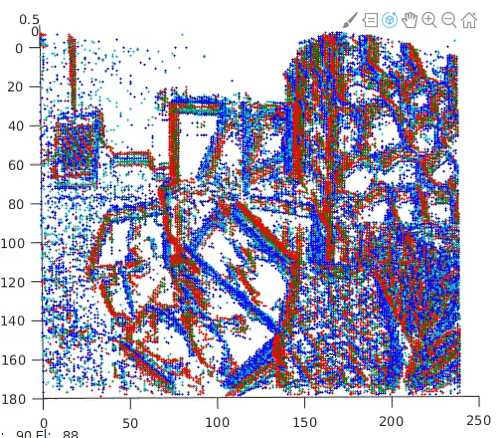
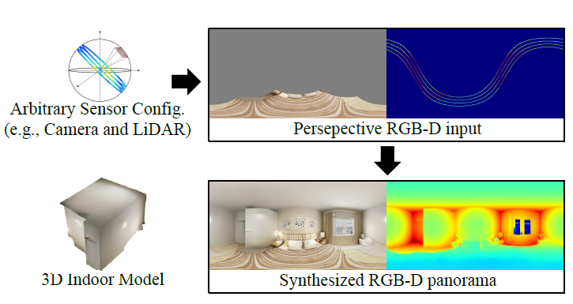
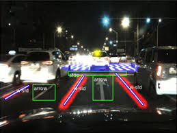
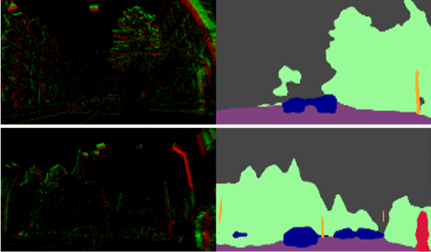
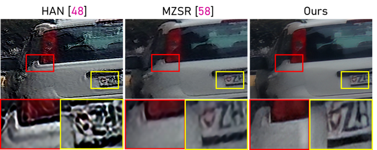
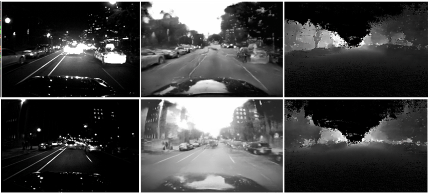
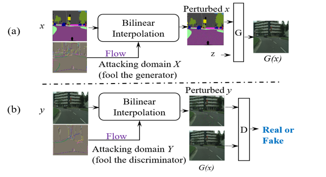
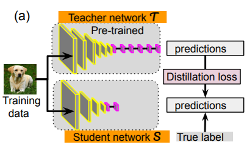
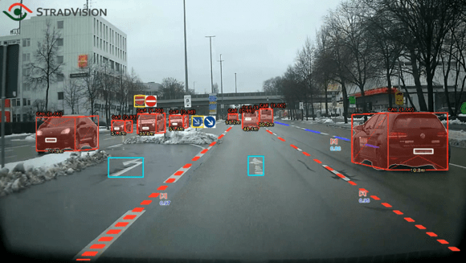

Our research areas To make intelligent systems work in all visual conditions with comptuter vision and AI!  Novel camera-based vision High-speed and HDR vision problems  3D image and reconstruction> Digital human, Neural rendering  Vision in adverse conditions Nigt-scene vision, vision in all seasons  High-level vision problems Semmantic segmentation, 2D/3D object detection  Low-level vision problems HDR imaging, image/video restoration and enhancement  3D vision problems depth estimation, motion estimation and compensation  Deep learning methods in vision GANs,self-/semi-supervised learning  Data and computation in vision Domain adaptatoin, knowledge transfer  Computer vision for AR/Metaverse Avatar generation, Scene modeling and understanding